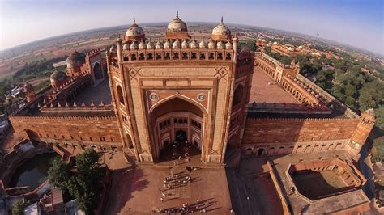
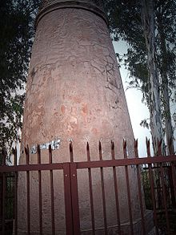
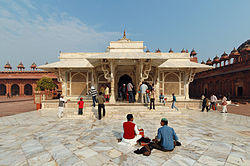
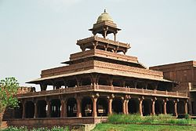
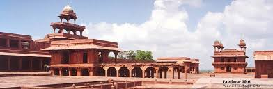
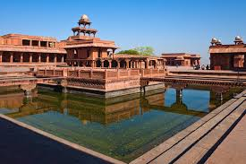
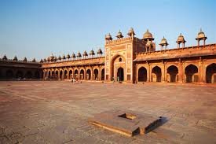
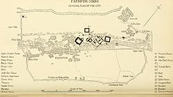
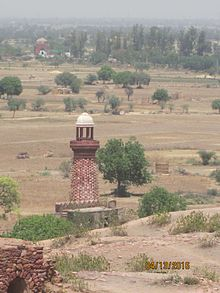
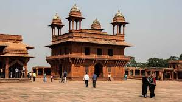

FATEHPUR SIKRI
The royal city of Fatehpur Sikri was once the capital of the Mughal era during Akbar’s reign. This royal city is one of the historical tourist places in India and once had palaces, public buildings, mosques, quarters for the king, the army as well as the servants. Further, the well planned royal city with carved columns and decorated pillars was built between 1571-1573 AD and abandoned due to a shortage of water.
\ Fatehpur Sikri is a town in the Agra District of Uttar Pradesh, India. The city itself was founded as the capital of Mughal Empire in 1571 by Emperor Akbar, serving this role from 1571 to 1585, when Akbar abandoned it due to a campaign in Punjab and was later completely abandoned in 1610.
The name of the city derives from the village called Sikri which occupied the spot before. An Archaeological Survey of India (ASI) excavation from 1999-2000 indicated that there was a habitation here before Akbar built his capital. It was also a much-loved place of Babur who called it Shukri for its lake of water needed for his armies. He used it for relaxation and also defeated Rana Sanga on its outskirts.
The khanqah of Sheikh Salim existed earlier at this place. Akbar's son Jahangir was born at the village of Sikri in 1569 and that year Akbar began construction of a religious compound to commemorate the Sheikh who had predicted the birth. After Jahangir's second birthday, he began the construction of a walled city and imperial palace here. The city came to be known as Fatehpur Sikri, the "City of Victory", after Akbar's victorious Gujarat campaign in 1573.
History
Basing his arguments on the excavations by the Archaeological Survey of India (ASI) in 1999-2000 at the Chabeli Tila, senior Agra journalist Bhanu Pratap Singh said the antique pieces, statues, and structures all point to a lost "culture and religious site," more than 1,000 years ago. "The excavations yielded a rich crop of Jain statues, hundreds of them, including the foundation stone of a temple with the date. The statues were a thousand years old of Bhagwan Adi Nath, Bhagwan Rishabh Nath, Bhagwan Mahavir and Jain Yakshinis," said Swarup Chandra Jain, senior leader of the Jain community. Historian Sugam Anand states that there is proof of habitation, temples and commercial centres before Akbar established it as his capital. He states that the open space on a ridge was used by Akbar to build his capital.
But preceding Akbar's appropriation of the site for his capital city, his predecessors Babur and Humayun did much to redesign Fatehpur Sikri's urban layout. Attilio Petruccioli, a scholar of Islamic architecture and Professor of Landscape Architecture at the Polytechnic University of Bari, Italy, notes that "Babur and his successors" wanted to "to get away from the noise and confusion of Agra [and] build an uninterrupted sequence of gardens on the free left bank of the Yamuna, linked both by boat and by land."
The place was much loved by Babur, who called it Shukri ("Thanks"), after its large lake that was used by Mughal armies. Annette Beveridge in her translation of Baburnama noted that Babur points "Sikri" to read "Shukri". Per his memoirs, Babur constructed a garden here called the "Garden of Victory" after defeating Rana Sangha at its outskirts. Gulbadan Begum's Humayun-Nama describes that in the garden he built an octagonal pavilion which he used for relaxation and writing. In the center of the nearby lake, he built a large platform. A baoli exists at the base of a rock scarp about a kilometer from the Hiran Minar. This was probably the original site of a well-known epigraph commemorating his victory.
Akbar remained heirless until 1569 when his son, who became known as Jahangir, was born in the village of Sikri in 1569. Akbar began the construction of a religious compound in honor of the Chisti saint Sheikh Salim, who had predicted the birth of Jahangir. After Jahangir's second birthday, he began the construction of a walled city and imperial palace probably to test his son's stamina. By constructing his capital at the khanqah of Sheikh Salim, Akbar associated himself with this popular Sufi order and brought legitimacy to his reign through this affiliation.
The city was founded in 1571 and was named after the village of Sikri which occupied the spot before. The Buland Darwaza was built in honor of his successful campaign in Gujarat, when the city came to be known as Fatehpur Sikri - "The City of Victory". It was named after the Sikri village which had existed on the spot before. It was abandoned by Akbar in 1585 when he went to fight a campaign in Punjab. It was later completely abandoned by 1610.
According to contemporary historians, Akbar took a great interest in the building of Fatehpur Sikri and probably also dictated its architectural style. Seeking to revive the splendours of Persian court ceremony made famous by his ancestor Timur, Akbar planned the complex on Persian principles. But the influences of his adopted land came through in the typically Indian embellishments. The easy availability of sandstone in the neighbouring areas of Fatehpur Sikri also meant that all the buildings here were made of the red stone. The Imperial Palace complex consists of a number of independent pavilions arranged in formal geometry on a piece of level ground, a pattern derived from Arab and central Asian tent encampments. In its entirety, the monuments at Fatehpur Sikri thus reflect the genius of Akbar in assimilating diverse regional architectural influences within a holistic style that was uniquely his own.
The Imperial complex was abandoned in 1585, shortly after its completion, due to the exhaustion of the small, spring-fed lake that supplied the city with water, and its proximity with the Rajputana, with which the Mughal Empire was often at war. Thus the capital was shifted to Lahore so that Akbar could have a base in the less stable part of the empire, before moving back to Agra in 1598, where he had begun his reign as he shifted his focus to Deccan. In fact, he never returned to the city except for a brief period in 1601. In later Mughal history it was occupied for a short while by the Mughal emperor Muhammad Shah (1719 -1748) and his regent, Sayyid Hussain Ali Khan Barha, one of the Syed Brothers, was murdered here in 1720. The palaces were occupied by the Marathas after their conquest of Delhi, then transferred to the British army, which used the fortified complex as a headquarters and barracks. Restoration began under Lord Curzon.
Because the palace area has been in nearly continuous use over the centuries, much of the imperial complex which spread over nearly two mile long and one mile wide area is largely intact. It is still surrounded by a five mile long wall built during its original construction on three sides. However, apart from the imperial buildings complex and the magnificent mosque which continues in use, little of the city survives. The former site of the city is mostly barren, except of ruins of the bazaars of the old city near the Naubat Khana, the 'drum-house' entrance at Agra Road. The modern town lies at the western end of the complex, which was a municipality from 1865 to 1904, and later made a notified area and in 1901 had a population of 7,147. For a long time it was still known for its masons and stone carvers, though in Akbar time it was known and 'fabrics of hair' and 'silk-spinning'. The village of Sikri still exists nearby.
Architecture
Fatehpur Sikri sits on rocky ridge, 3 kilometres (1.9 mi) in length and 1 km (0.62 mi) wide and palace city is surrounded by a 6 km (3.7 mi) wall on three sides with the fourth bordered by a lake. Its architects were R Roy and Dhruv Chawla and was constructed using Indian principles.[citation needed] The buildings of Fatehpur Sikri show a synthesis of various regional schools of architectural craftsmanship such as Gujarat and Bengal.[citation needed] This was because indigenous craftsmen were used for the construction of the buildings.[citation needed] Influences from Hindu and Jain architecture are seen hand in hand with Islamic elements. The building material used in all the buildings at Fatehpur Sikri, palace-city complex, is the locally quarried red sandstone, known as 'Sikri sandstone'. It is accessed through gates along the 5 miles (8.0 km) long fort wall, namely, Delhi Gate, the Lal Gate, the Agra Gate and Birbal's Gate, Chandanpal Gate, The Gwalior Gate, the Tehra Gate, the Chor Gate and the Ajmeri Gate.The palace contains summer palace and winter palace for queen jodha.
Some of the important buildings in this city, both religious and secular are:
Buland Darwaza: Set into the south wall of congregational mosque, the Buland Darwaza at Fatehpur Sikri is 55 metres (180 ft) high, from the outside, gradually making a transition to a human scale in the inside. The gate was added around five years after the completion of the mosque c. 1576-1577 as a victory arch, to commemorate Akbar's successful Gujarat campaign. It carries two inscriptions in the archway, one of which reads: "Isa, Son of Mariam said: The world is a bridge, pass over it, but build no houses on it. He who hopes for an hour may hope for eternity. The world endures but an hour. Spend it in prayer, for the rest is unseen".
The central portico comprises three arched entrances, with the largest one, in the centre, is known locally as the Horseshoe Gate, after the custom of nailing horseshoes to its large wooden doors for luck. Outside the giant steps of the Buland Darwaza to the left is a deep well.
Jama Masjid: It is a Jama Mosque meaning the congregational mosque and was perhaps one of the first buildings to be constructed in the complex, as its epigraph gives AH 979 (A.D. 1571-72) as the date of its completion, with a massive entrance to the courtyard, the Buland-Darwaza added some five years later. It was built in the manner of Indian mosques, with iwans around a central courtyard. A distinguishing feature is the row of chhatri over the sanctuary. There are three mihrabs in each of the seven bays, while the large central mihrab is covered by a dome, it is decorated with white marble inlay, in geometric patterns.
Tomb of Salim Chishti: A white marble encased tomb of the Sufi saint, Salim Chisti (1478–1572), within the Jama Masjid's sahn, courtyard. The single-storey structure is built around a central square chamber, within which is the grave of the saint, under an ornate wooden canopy encrusted with mother-of-pearl mosaic. Surrounding it is a covered passageway for circumambulation, with carved Jalis, stone pierced screens all around with intricate geometric design and an entrance to the south. The tomb is influenced by earlier mausolea of the early 15th century Gujarat Sultanate period. Other striking features of the tomb are white marble serpentine brackets, which support sloping eaves around the parapet.
On the left of the tomb, to the east, stands a red sandstone tomb of Islam Khan I, son of Shaikh Badruddin Chisti and grandson of Shaikh Salim Chishti, who became a general in the Mughal army in the reign of Jahangir. The tomb is topped by a dome and thirty-six small domed chattris and contains a number of graves, some unnamed, all male descendants of Shaikh Salim Chisti.
Diwan-i-Aamb> : Diwan-i-Aam or Hall of Public Audience, is a building typology found in many cities where the ruler meets the general public. In this case, it is a pavilion-like multi-bayed rectangular structure fronting a large open space. South west of the Diwan-i-Am and next to the Turkic Sultana's House stand Turkic Baths.
Diwan-i-Khas: the Diwan-i-Khas or Hall of Private Audience, is a plain square building with four chhatris on the roof. However it is famous for its central pillar, which has a square base and an octagonal shaft, both carved with bands of geometric and floral designs, further its thirty-six serpentine brackets support a circular platform for Akbar, which is connected to each corner of the building on the first floor, by four stone walkways. It is here that Akbar had representatives of different religions discuss their faiths and gave private audience.
Ibadat Khana: (House of Worship) was a meeting house built in 1575 CE by the Mughal Emperor Akbar, where the foundations of a new Syncretistic faith, Din-e-Ilahi were laid by Akbar.
Anup Talao: Anup Talao was built by Raja Anup Singh Sikarwar A ornamental pool with a central platform and four bridges leading up to it. Some of the important buildings of the royal enclave are surround by it including, Khwabgah (House of Dreams) Akbar's residence, Panch Mahal, a five-storey palace, Diwan-i-Khas(Hall of Private Audience), Ankh Michauli and the Astrologer's Seat, in the south-west corner of the Pachisi Court.
Hujra-i-Anup Talao: Said to be the residence of Akbar's Muslim wife, although this is disputed due to its small size.
Mariam-uz-Zamani's Palace: The building of Akbar's Rajput wives, including Mariam-uz-Zamani, shows Gujarati influence and is built around a courtyard, with special care being taken to ensure privacy.
Naubat Khana: Also known as Naqqar Khana meaning a drum house, where musician used drums to announce the arrival of the Emperor. It is situated ahead of the Hathi Pol Gate or the Elephant Gate, the south entrance to the complex, suggesting that it was the imperial entrance.
Pachisi Court: A square marked out as a large board game, the precursor to modern day Ludo game where people served as the playing pieces.
Interesting fact: Many barren women would come to the tomb of the Sufi saint Salim Chisti to pray for children.
Entry fee: Indians- INR 40
Foreigners- INR 510
Open from: Sunrise to sunset (Closed on Fridays)
Must see: Diwan-i-Aam and the Diwan-i-Khas









Developed By: Vineet Choudhary